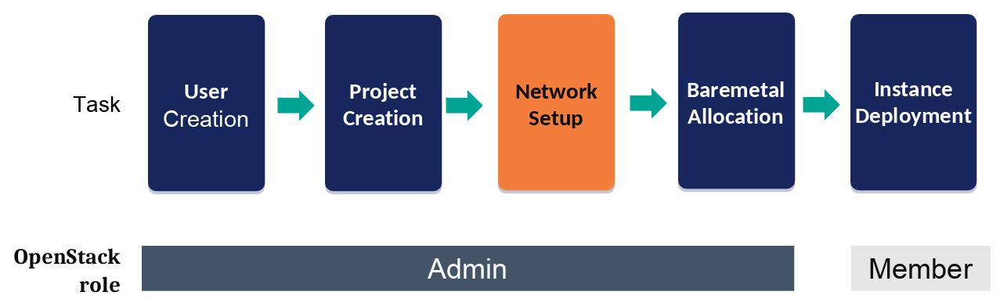
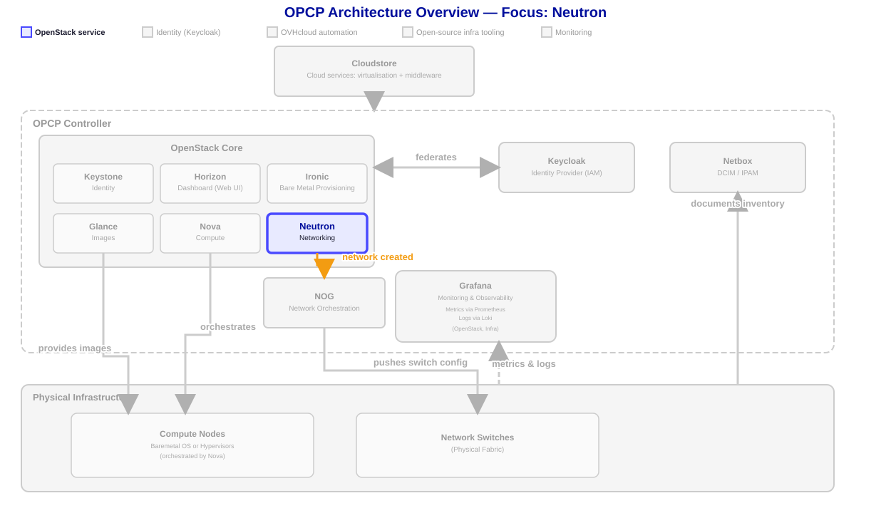
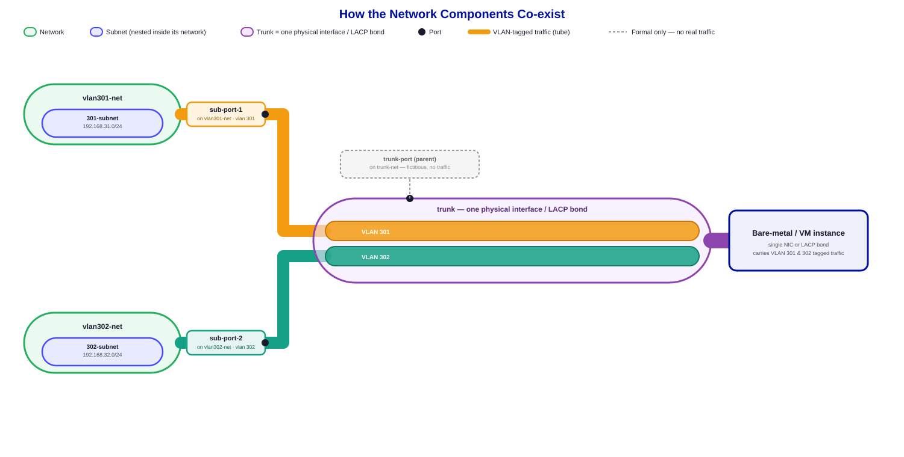

Networking

- In the previous lesson, you have learnt how to create users and clients to interract with Openstack.
- In this lesson you will create networks, subnets, and routers with the Openstack CLI to connect your instances to the outside world or to each other.
- OpenStack networking is handled by the Neutron service.

Objective
We will now go through the steps to configure network on baremetal node using Openstack CLI client.

Create a private network and subnet
Before deploying your instance, it is generally necessary to create a private network so that it is accessible within your local infrastructure. If you already have a private network with a subnet on your project that you want to use, you can skip the creation step and directly list your networks to retrieve the name or ID of the network concerned.
You must be administrator to do the next
Step 1: Create the private network
openstack network create ${STUDENT_ID}-net
--provider-network-type vlan
--provider-physical-network physnet1 # Static value in OPCP
--provider-segment $VLAN_ID # Neutron segment-idResult looks like this :
+---------------------------+--------------------------------------+
| Field | Value |
+---------------------------+--------------------------------------+
| admin_state_up | UP |
| availability_zone_hints | |
| availability_zones | |
| created_at | 2026-07-31T14:04:47Z |
| description | |
| dns_domain | None |
| id | 89174a66-72f2-482b-a6a7-6186c7f61364 |
| ipv4_address_scope | None |
| ipv6_address_scope | None |
| is_default | None |
| is_vlan_transparent | None |
| mtu | 1500 |
| name | jdoe-net |
| port_security_enabled | True |
| project_id | eedac8d5b9cf4a299072d2c0b53f7e03 |
| provider:network_type | vlan |
| provider:physical_network | physnet1 |
| provider:segmentation_id | 2056 |
| qos_policy_id | None |
| revision_number | 1 |
| router:external | Internal |
| segments | None |
| shared | False |
| status | ACTIVE |
| subnets | |
| tags | |
| tenant_id | eedac8d5b9cf4a299072d2c0b53f7e03 |
| updated_at | 2026-07-31T14:04:47Z |
+---------------------------+--------------------------------------+By default, a network is only visible to the project that created it (as well as administrators). We will share the network only with specific projects, you need to use OpenStack's Role-Based Access Control (RBAC) mechanism: Neutron RBAC Documentation.
openstack network rbac create
--target-project target_project_id # must adapt
--action access_as_shared # Fixed value
--type network network_uuid # must adaptExample output :
+-------------------+--------------------------------------+
| Field | Value |
+-------------------+--------------------------------------+
| action | access_as_shared |
| id | dde0c8dc-d35a-4408-98bf-be4149abd043 |
| object_id | 89174a66-72f2-482b-a6a7-6186c7f61364 |
| object_type | network |
| project_id | eedac8d5b9cf4a299072d2c0b53f7e03 |
| target_project_id | ab59a41615be4d73ad90e51957995976 |
+-------------------+--------------------------------------+Once the network is created, you can list it using the command:
openstack network list --name ${STUDENT_ID}-net
If needed, you can list all networks by removing the --name argument.
Step 2: Create the subnet
By defat, the only element needed to create a subnet on your network is the CIDR you want to configure and the network you just created:
openstack subnet create --network ${STUDENT_ID}-net --subnet-range 192.168.120.0/24 ${STUDENT_ID}-subnetThis subnet can then be used to deploy an instance, allowing OpenStack to assign an IP address to it during installation.
INFO : At this point, any instance can be deployed by giving network name at creation : it will create a Neutron Standard port and attach it to given network. If you want to use multiple networks on a single port, follow Trunk instructions below.
Summary
- Neutron handles OpenStack networking
- Create networks with
openstack network create - Specify segment ID for network if needed
- Create subnets with
openstack subnet create
In the next step, we will deploy a server.